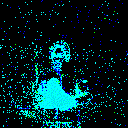
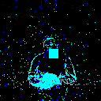
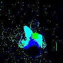
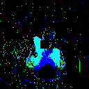

We create the first backdoor attacks on neuromorphic datasets. Precisely we created two different backdoor attacks, static and moving trigger. The construction of the static and moving trigger is shown in the figure. We can achieve stealthiness in some scenarios, while achieving high accuracy on both main and backdoor tasks.
Neural networks provide state-of-the-art results in many domains. Yet, they often require high energy and time-consuming training processes. Therefore, the research community is exploring alternative, energy-efficient approaches like spiking neural networks (SNNs). SNNs mimic brain neurons by encoding data into sparse spikes, resulting in energy-efficient computing. To exploit the properties of the SNNs, they can be trained with neuromorphic datasets that capture the differences in motion. SNNs, just like any neural network model, can be susceptible to security threats that make the model perform anomalously. One of the most crucial threats is the backdoor attacks that modify the training set to inject a trigger in some samples. After training, the neural network will perform correctly on the main task. However, under the presence of the trigger (backdoor) on an input sample, the attacker can control its behavior. The existing works on backdoor attacks consider standard datasets and not neuromorphic ones.
In this paper, to the best of our knowledge, we present the first backdoor attacks on neuromorphic datasets. Due to the structure of neuromorphic datasets, we utilize two different triggers, i.e., static and moving triggers. We then evaluate the performance of our backdoor using spiking neural networks, achieving top accuracy on both main and backdoor tasks, up to 99%.